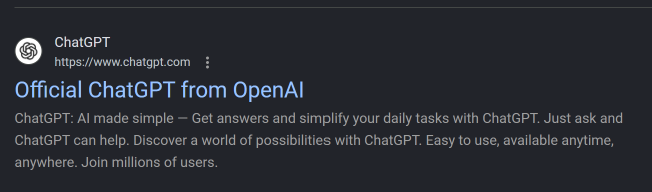
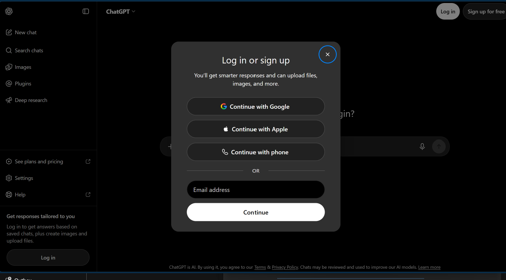
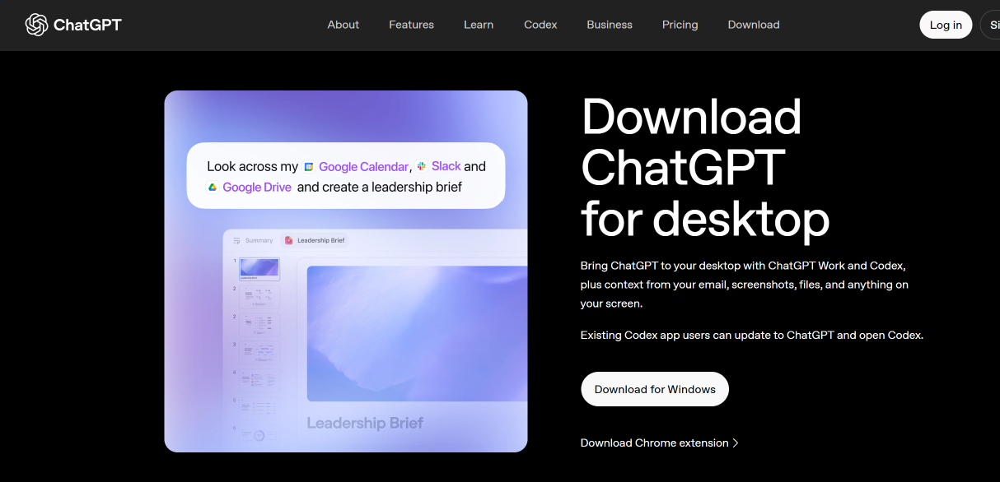
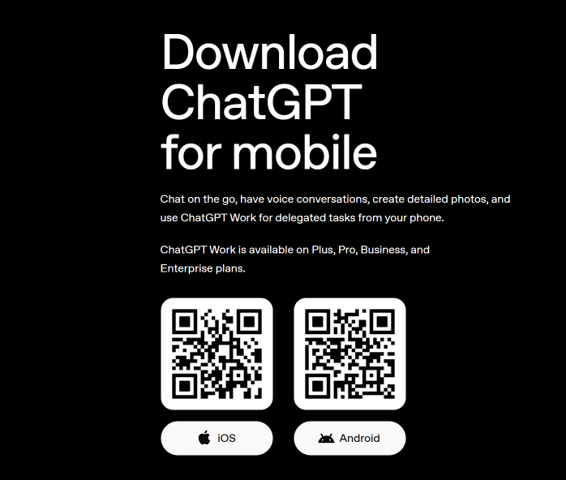
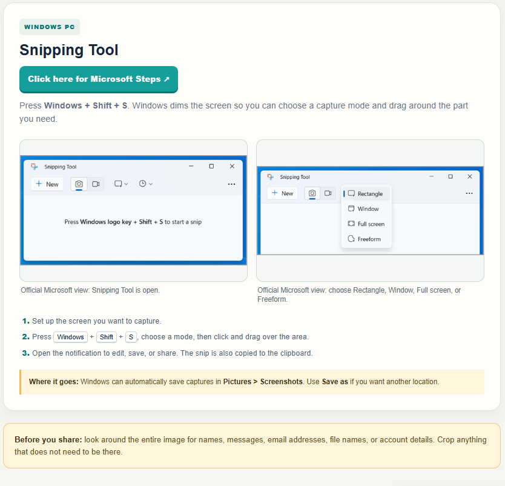

These are the everyday skills that make everything else easier. Pick one, practice it, and come back whenever you need a reminder.
THE FUNDAMENTALS
Choose what you need today.
4 essentials
✦
You do not have to remember it all at once. AYDEM is here to be your reference whenever you need to learn it again.
/Module 1
RECOGNIZE CHATGPT
Recognizing the real ChatGPT
Before you download or sign in, learn the small clues that help you find the official ChatGPT.
1
What this is
ChatGPT is made by OpenAI. Other apps and websites may use similar names, so checking the publisher matters.
Look for these three clues
01The name
It says ChatGPT clearly.
02The publisher
It says OpenAI.
03The source
Use the official app store or OpenAI website.
Practice: check the publisher
Use the result you actually see. Find the name, publisher, and URL in the result itself. Nothing will be downloaded.
WINDOWS EXAMPLE
CURRENT DEVICE VIEWWindows PC · browser searchThis is the exact Google result you supplied. Hover or choose a clue to light up the words to notice.
WHAT YOU ARE LEARNING TO NOTICE
Name
ChatGPT
Publisher
OpenAI
Source
https://www.chatgpt.com
Choose a numbered clue. The matching words will glow on the supplied result.
2
What should happen next?
You should see OpenAI listed as the publisher. If you do not, pause and check the app store listing again before installing.
/Lesson 2 of 4
RECOGNIZE CHATGPT
Open the official result
Now that you can identify the result, learn what to check before you open it.
1
Read the result before you click
Use the title, publisher, and URL together. Your screen may have a slightly different snippet, but the official source should lead to ChatGPT at chatgpt.com.

Your Windows result screenshot, used as the visual reference for this lesson.
1
Read the name: ChatGPT.
2
Read the publisher: OpenAI.
3
Read the source: https://www.chatgpt.com.
2
Then open it
Click the result title only after the three clues agree. The next screen is the real ChatGPT site, where you may log in or sign up.
/Lesson 3 of 4
RECOGNIZE CHATGPT
Sign in or create an account
The official ChatGPT page may show both choices. Choose the one that matches your situation.
1
This is the account screen
This is what the sign-in choice can look like after the official site opens. The buttons belong to ChatGPT’s real page—not AYDEM.

Your supplied ChatGPT sign-in screenshot.
Choose one path
1
Already have an account? Choose Log in and use the sign-in method you used before.
2
New to ChatGPT? Choose Sign up, then follow the on-screen instructions.
3
Keep credentials private: enter them only on the official ChatGPT page.
2
After the account step
Once you are signed in, you can use ChatGPT on the web. The Windows app is a separate download lesson.
/Lesson 4 of 4
DOWNLOAD & OPEN CHATGPT
Download the ChatGPT on Windows app
The website and the ChatGPT on Windows app are two different ways to use ChatGPT. Learn the official Windows path before you install anything.
1
Use the official Windows route
OpenAI’s current Windows guidance sends learners to the Microsoft Store. Do not download a look-alike installer from an advertisement or an unknown website.
1
Open the official ChatGPT download page
Start at OpenAI’s official download page. This is the page you supplied.

Official desktop download page.
2
Choose Download for Windows
On the official page, select the Windows option. It takes you to the Microsoft Store.
Look for the Download for Windows option shown on the page.
3
Check the Microsoft Store listing
Before installing, confirm the listing says ChatGPT and the publisher is OpenAI.
Actual Microsoft Store screenshot needed hereThis visual must show the real Store listing, including the app name and publisher. It is not replaced with a made-up card.Open the live Microsoft Store listing ↗
4
Open the installed app
After installation, open ChatGPT from Windows. The next visual should show the downloaded app in your Windows Downloads/File Explorer view.
Actual File Explorer screenshot needed hereThis visual must match the learner’s real Windows download view. It is not replaced with an invented illustration.

The same official page also shows mobile choices; those are separate device lessons.
Choose the Windows option, which takes you to the Microsoft Store.
3
In the Store, check that the app is ChatGPT from OpenAI before installing.
4
Open the installed app and sign in with the same ChatGPT account.
Current-source note: OpenAI’s Windows help page lists Windows 10 x64/arm64 version 17763.0 or higher and notes that access can depend on account or organization policies.
Now practice selecting and pasting text without sending anything.
/Safe practice
PRACTICE ROOM
Select, copy, and paste
Try the same pattern you will use when you bring useful information into ChatGPT.
STEP 1 OF 3Select the sentence
1
Select the sentence
Text is selected by highlighting it—not by clicking it. First notice where the message lives. Then drag across the sentence on a computer, or touch and hold a word on a phone or tablet.
M
MessagesConversation with Jordan
•••
JJordanToday, 7:14 PM
Jordan sent you a message
The game starts at 7:15 PM on Thursday, and the details are in this message.
Computer: click and drag from the first word to the last. Phone or tablet: touch and hold a word, then adjust the highlighted words until the sentence is covered. Keyboard: focus this sentence and hold Shift while using the arrow keys.
2
Paste it into ChatGPT
Click inside the message field, then use the paste action you actually use on your device. Nothing will be sent from this practice.
✦
ChatGPTMessage field
Windows PC: press Ctrl + V, or right-click in the field and choose Paste.
Mac: press ⌘ + V, or Control-click in the field and choose Paste.
Phone or tablet: touch and hold inside the message field, then choose Paste from the menu.
✦
SKILL PRACTICED
You did the whole pattern.
Select. Copy. Paste. These three actions help you move useful information from one place to another.
/Screenshot basics
SCREENSHOT BASICS
Capture it, save it, find it.
A screenshot is a picture of what is on your screen. Follow the steps for the device in front of you, including what happens after the picture is taken.
✦
You can learn this one step at a time.
First capture the screen. Then look for the preview or notification. Finally, save, share, or find the picture again. Nothing in these examples captures your real screen.
Choose one device. Only that device’s exact reference images and steps are shown.
AYDEM cannot take a screenshot from inside this lesson. Try this live on your Windows PC so you can see the dimmed screen and capture choices yourself.
Three steps to take the screenshot
STEP 1
Press these three keys together
⊞ Windows+Shift+S
Windows key: the key with the Windows logo, usually on the bottom row of the keyboard. Hold Windows and Shift, then tap S.
Your screen will dim. A small Snipping Tool bar will appear so you can choose what to capture.
Set up the screen. Put the window or information you want to save where you can see it.
Press Windows + Shift + S. Hold the Windows logo key and Shift, then press S.
Choose a mode and capture. Pick a mode below, then click and drag or click the screen as that mode requires.
Rectangle
Click and drag a box around the exact area you want.
Window
Click a whole open window. Windows captures that window for you.
Full screen
Captures everything visible across your screen.
Freeform
Draw an outline around an irregular shape, then capture inside it.

What the Snipping Tool can look like after you press the three keys: the tool opens and the mode menu shows the four capture choices.
After you capture: open the notification or preview to edit, save, or share. The snip is also copied to your clipboard. Windows can save captures in Pictures > Screenshots; use Save as for another location.
Android menus vary by phone maker. The official Google guide shows the button combination, preview, Share, Edit, and save locations without pretending every phone looks identical.
Android
Use the official Android screenshots and steps
Press Power + Volume down together. Then use the preview or open Photos → Collections → On this device → Screenshots. Some phones use Gallery → Albums → Screenshots.
Press Shift + Command + 4, then drag over the part you want.
Official Apple view: the screenshot shortcut.Official Apple view: select a portion of the screen.
Press Shift + Command + 4. The pointer becomes a crosshair.
Click and drag over the part you want, then release.
Find the saved PNG on the Desktop, or press Shift + Command + 5 for more options.
Where it goes: Mac screenshots are saved to the Desktop by default.
Before you share: look around the entire image for names, messages, email addresses, file names, or account details. Crop anything that does not need to be there.
PLAIN-LANGUAGE GLOSSARY
Words worth knowing
No mystery words. Search for a term and get a clear explanation.
Attachment
A file or picture you add to a message.
Clipboard
A temporary holding tray for something you copied.
Publisher
The person or company that made an app.
Source
The place the information comes from, such as a website address or app store listing.
Screenshot
A picture of what is showing on your screen.
Upload
To send a saved file from your device into an app or website.
Browser
An app used to visit websites, such as Safari or Chrome.
Highlighted text
Words shown with a colored background after you select them.
App
A program on a phone, tablet, or computer that helps you do something.
YOUR LEARNING PATH
What device are you using?
AYDEM will show the actions that match your screen.